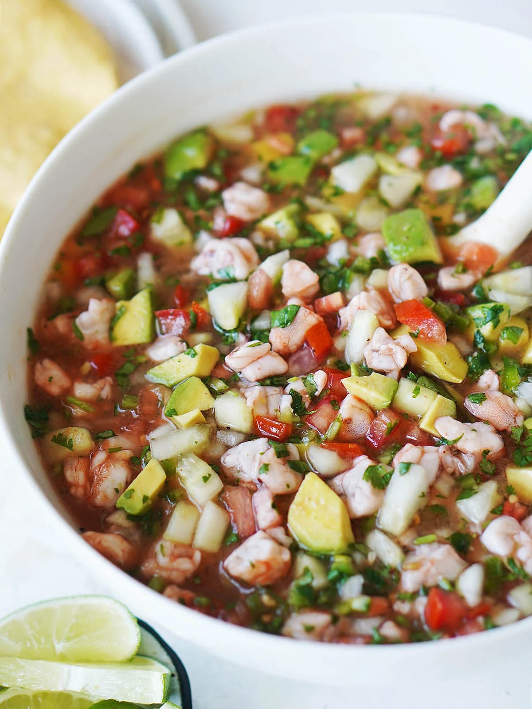

Home
Ceviche

Description
Ceviche is a popular dish across certain countries in Latin America, with
this recipe in particular originating from El Salvador. It can be eaten as
a snack or meal, by itself, with chips, tostadas, or however else you'd
like. If you love sour, citrusy, and/or spicy foods, this dish is for you!
Ingredients
- Shrimp
-
This recipe uses a bag of frozen, cooked, tail-off, baby shrimp;
however, you're free to use whatever shrimp you like, so long as you
cook it :)
- 5+ Limes (personally I do 10)
- 4 Roma Tomatoes
- 1/4 Red Onion
- 1 Cilantro Bunch
- Salt
and if you like spicy ...
- 1-2 Jalapeños
- 2-3 Habaneros
Steps
-
Cut the shrimp as big or small as you'd like. I personally cut my baby
shrimp into 4 pieces.
-
Dice the tomatoes, onions, & cilantro as big or small as you'd like. I
find that the finer the dice, the yummier.
-
Optionally, if you like spicy, dice the jalapeños and habaneros. The
finer the dice, the spicier...
- Place all these ingredients together in a bowl.
- Squeeze all the lime into the bowl.
-
Add salt at your discretion, keep tasting it until you're satisfied.
That's all, enjoy :)